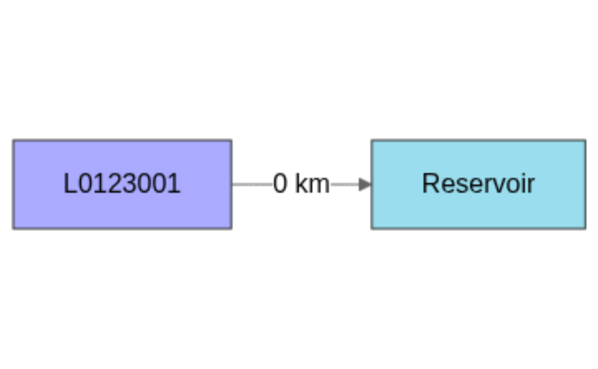
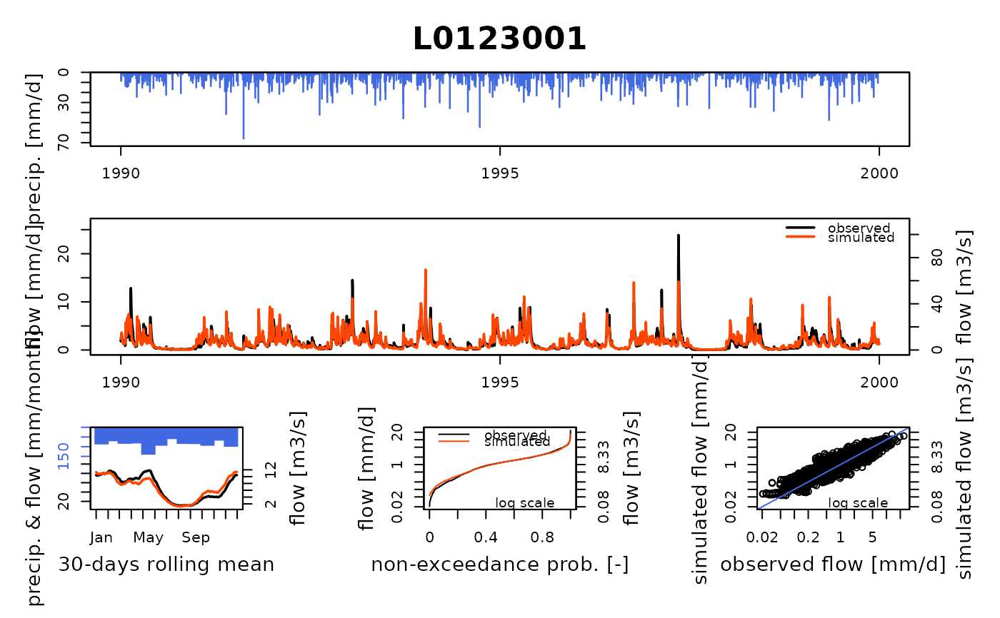
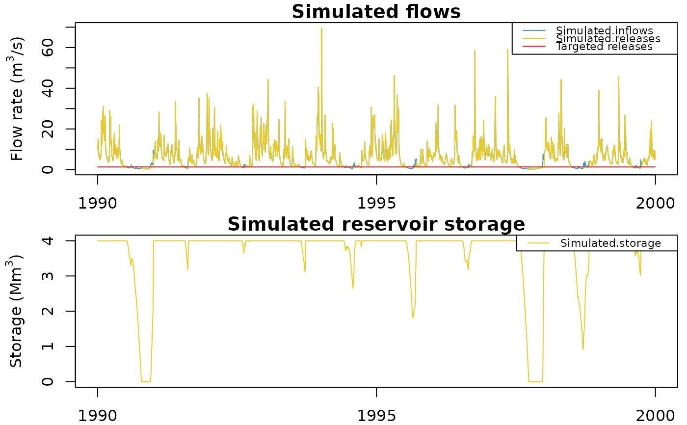
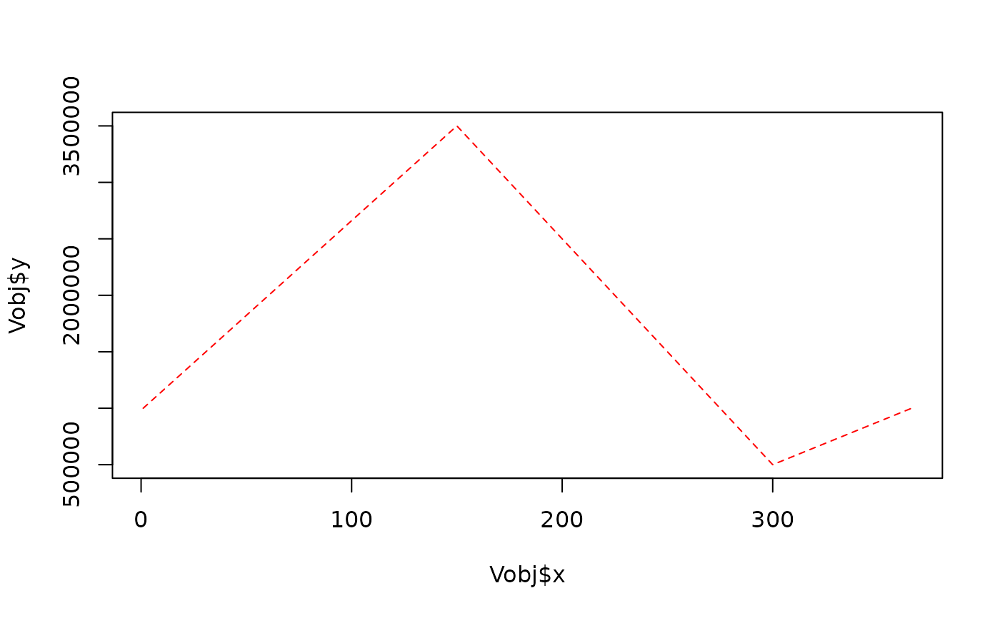
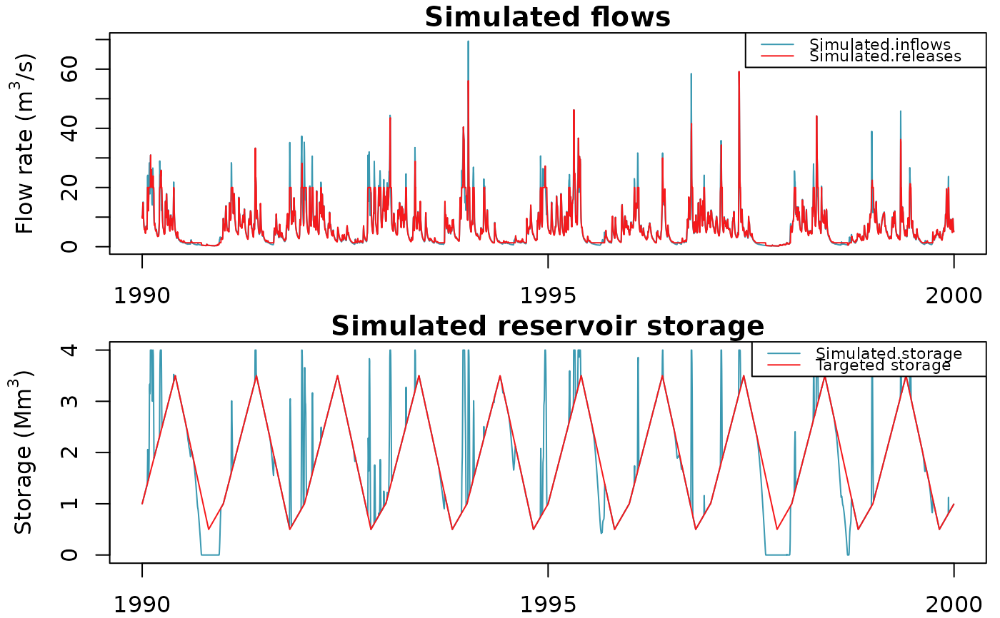

The reservoir model is a model combining a lag model and the calculation of
the water storage time series according to the released flow time series
from the Qrelease parameter of CreateInputsModel.GRiwrm.
Arguments
- InputsModel
[object of class InputsModel] see
CreateInputsModelfor details- RunOptions
[object of class RunOptions] see
CreateRunOptionsfor details- Param
numeric vector of length 2 containing (1) the maximum capacity of the reservoir and (2) the celerity in m/s of the upstream inflows.
Value
An OutputsModel object like the one return by airGR::RunModel but completed with the items:
Vsim: representing the water volume time series in m3Qsim_m3: flow released by the reservoir in cubic meters by time step (see Details)Qdiv_m3: only present in case of Diversion in the node, diverted flow in cubic meters per time step. The latter differs from the flows time series provided in argumentQinfof CreateInputsModel.GRiwrm by the limitation due to an empty reservoirQover_m3: only present in case of Diversion in the node, diverted volumes that cannot be operated due to an empty reservoir
Details
The simulated flow corresponds to the released flow except when the reservoir is empty (release flow is limited) or full (release flow is completed by inflows excess).
By default, the initial reservoir volume at the beginning of the warm-up period is equal to the half of the maximum reservoir capacity.
The parameters of the model can't be calibrated and must be fixed during the calibration process by using this instruction after the call to CreateCalibOptions:
CalibOptions[[id_of_the_reservoir]]$FixedParam <- c(Vmax, celerity)
Initial states of the model consists in the initial volume storage in the reservoir and can be defined with the following instruction after the call to CreateRunOptions.GRiwrmInputsModel:
RunOptions[[id_of_the_reservoir]]$IniStates <- c("Reservoir.V" = initial_volume_m3)
The final state of the reservoir is stored in OutputsModel$StateEnd and
can be reused for starting a new simulation with the following instruction:
RunOptions[[id_of_the_reservoir]]$IniStates <- unlist(OutputsModel[[id_of_the_reservoir]]$StateEnd)
Direct injection nodes connected to a reservoir nodes act as water injections
or withdrawals directly in the reservoir volume (whatever the length between
the direct injection nodes and the reservoir node). The abstraction volumes
that cannot be operated due to an empty reservoir are notified by the
item Qover_m3 in the returned OutputsModel object.
Examples
#######################################################
# Daily time step simulation of a reservoir filled by #
# one catchment supplying a constant released flow #
#######################################################
library(airGRiwrm)
data(L0123001)
# Inflows comes from a catchment of 360 km² modeled with GR4J
# The reservoir receives directly the inflows
db <- data.frame(id = c(BasinInfo$BasinCode, "Reservoir"),
length = c(0, NA),
down = c("Reservoir", NA),
area = c(BasinInfo$BasinArea, NA),
model = c("RunModel_GR4J", "RunModel_Reservoir"),
stringsAsFactors = FALSE)
griwrm <- CreateGRiwrm(db)
# \dontrun{
plot(griwrm)

# }
# Formatting of GR4J inputs for airGRiwrm (matrix or data.frame with one
# column by sub-basin and node IDs as column names)
Precip <- matrix(BasinObs$P, ncol = 1)
colnames(Precip) <- BasinInfo$BasinCode
PotEvap <- matrix(BasinObs$E, ncol = 1)
colnames(PotEvap) <- BasinInfo$BasinCode
# We propose to compute the constant released flow from
# the Q20 of the natural flow
# The value is in m3 by time step (day)
(Qrelease <- quantile(BasinObs$Qls, na.rm = TRUE, probs = 0.2) / 1000 * 86400)
#> 20%
#> 114393.6
# Formatting of reservoir released flow inputs for airGRiwrm (matrix or data.frame
# with one column by node and node IDs as column names)
Qrelease <- data.frame(Reservoir = rep(Qrelease, length(BasinObs$DatesR)))
InputsModel <- CreateInputsModel(griwrm, DatesR = BasinObs$DatesR,
Precip = Precip,
PotEvap = PotEvap,
Qrelease = Qrelease)
#> CreateInputsModel.GRiwrm: Processing sub-basin L0123001...
#> CreateInputsModel.GRiwrm: Processing sub-basin Reservoir...
## run period selection
Ind_Run <- seq(which(format(BasinObs$DatesR, format = "%Y-%m-%d")=="1990-01-01"),
which(format(BasinObs$DatesR, format = "%Y-%m-%d")=="1999-12-31"))
# Creation of the GRiwmRunOptions object
RunOptions <- CreateRunOptions(
InputsModel,
IndPeriod_Run = Ind_Run,
IndPeriod_WarmUp = seq.int(Ind_Run[1] - 365, length.out = 365)
)
# Initial states of the reservoir can be provided by the user
# For example for starting with an empty reservoir...
RunOptions[["Reservoir"]]$IniStates <- c("Reservoir.V" = 0)
# calibration criterion: preparation of the InputsCrit object
Qobs <- data.frame("L0123001" = BasinObs$Qmm[Ind_Run])
InputsCrit <- CreateInputsCrit(InputsModel,
ErrorCrit_KGE2,
RunOptions = RunOptions,
Obs = Qobs)
# preparation of CalibOptions object with fixed parameters for the reservoir
# The capacity of the reservoir is 10 hm3 and the inflow celerity is 0.5 m/s.
Vmax <- 4E6
CalibOptions <- CreateCalibOptions(
InputsModel,
FixedParam = list(Reservoir = c(Vmax = Vmax, celerity = 0.5))
)
OC <- Calibration(
InputsModel = InputsModel,
RunOptions = RunOptions,
InputsCrit = InputsCrit,
CalibOptions = CalibOptions
)
#> Calibration.GRiwrmInputsModel: Processing sub-basin 'L0123001'...
#> Grid-Screening in progress (
#> 0%
#> 20%
#> 40%
#> 60%
#> 80%
#> 100%)
#> Screening completed (81 runs)
#> Param = 169.017, -0.020, 83.096, 1.944
#> Crit. KGE2[Q] = 0.8231
#> Steepest-descent local search in progress
#> Calibration completed (28 iterations, 291 runs)
#> Param = 147.886, 0.347, 58.983, 2.345
#> Crit. KGE2[Q] = 0.8548
#> Calibration.GRiwrmInputsModel: Processing sub-basin 'Reservoir'...
#> Parameters already fixed - no need for calibration
#> Param = 4000000.000, 0.500
# Model parameters
Param <- extractParam(OC)
str(Param)
#> List of 2
#> $ L0123001 : num [1:4] 147.886 0.347 58.983 2.345
#> $ Reservoir: Named num [1:2] 4e+06 5e-01
#> ..- attr(*, "names")= chr [1:2] "Vmax" "celerity"
# Running simulation
OutputsModel <- RunModel(InputsModel, RunOptions, Param)
#> RunModel.GRiwrmInputsModel: Processing sub-basin L0123001...
#> RunModel.GRiwrmInputsModel: Processing sub-basin Reservoir...
# Plot the simulated flows and volumes on all nodes
Qobs <- cbind(BasinObs$Qmm[Ind_Run], Qrelease[Ind_Run, ])
colnames(Qobs) <- griwrm$id
plot(OutputsModel, Qobs = Qobs)

 # The plot for the reservoir can also be plotted alone
plot(OutputsModel$Reservoir, Qobs = Qobs[, "Reservoir"])
# The plot for the reservoir can also be plotted alone
plot(OutputsModel$Reservoir, Qobs = Qobs[, "Reservoir"])

#######################################################
# Daily time step simulation of a reservoir tracking #
# an objective filling curve using a local regulation #
#######################################################
# The objective here is to simulate the same reservoir as above
# but with new rules:
# - A minimum flow downstream the reservoir defined as:
(Qmin <- Qrelease[1,])
#> [1] 114393.6
# - A maximum release flow of 20 m3/s for flood mitigation
(Qmax <- 20 * 86400)
#> [1] 1728000
# - An annual objective filling curve managing floods and droughts by
# trying to keep the reservoir volume between 2 and 8 Mm3:
Vobj <- approx(c(1, 150, 300, 366),
c(1E6, 3.5E6, 0.5E6, 1E6),
seq(366))
plot(Vobj, type = "l", col = "red", lty = 2)

# The regulation function takes InputsModel of the reservoir node and the
# global GRiwrm OutputsModel as arguments and returns a modified
# InputsModel used by RunModel_Reservoir afterward
fun_factory_Regulation_Reservoir <- function(Vini, Vobj, Qmin, Qmax, Vmax) {
function(InputsModel, RunOptions, OutputsModel, env) {
# Release flow time series initialisation
Qrelease <- rep(0, length(InputsModel$DatesR))
# Build inflows time series from upstream Qsim (warmup & run)
Qinflows <- Qrelease
IPR_all <- c(RunOptions$IndPeriod_WarmUp, RunOptions$IndPeriod_Run)
Qinflows[IPR_all] <- c(OutputsModel$L0123001$RunOptions$WarmUpQsim_m3,
OutputsModel$L0123001$Qsim_m3)
# Reservoir volume initialisation
V <- Vini
# Loop over simulation time steps (warmup & run periods)
for(ts in IPR_all) {
# Update reservoir volume with inflows
V <- V + Qinflows[ts]
# Rule #1: follow the objective filling curve (lower priority)
j <- as.numeric(format(InputsModel$DatesR[ts], "%j"))
Vobj_ts <- approx(Vobj, xout = j)$y
Qrelease[ts] <- V - Vobj_ts
# Rule #2: Release cannot be less than Qmin
Qrelease[ts] <- max(Qmin, Qrelease[ts])
# Rule #3: Release cannot be more than Qmax
Qrelease[ts] <- min(Qmax, Qrelease[ts])
# Update reservoir volume after release
V <- V - Qrelease[ts]
# Rule #4: hard constraints on the reservoir (full or empty?)
if (V < 0) {
Qrelease[ts] <- Qrelease[ts] + V
V <- 0
}
V <- min(V, Vmax)
}
InputsModel$Qrelease <- Qrelease
return(InputsModel)
}
}
# A call to fun_factory_Regulation_Reservoir returns the regulation
# function with the parameters Qmin, Qmax, Vobj enclosed in the environment
# of the function
Regulation_Reservoir <-
fun_factory_Regulation_Reservoir(RunOptions$Reservoir$IniStates, Vobj, Qmin, Qmax, Vmax)
# Then we need to update InputsModel in order to take into account the regulation
# function instead of predefined Qrelease in the previous study case
IM_reg <- CreateInputsModel(griwrm,
DatesR = BasinObs$DatesR,
Precip = Precip,
PotEvap = PotEvap,
Qrelease = Qrelease,
FUN_REGUL = list(Reservoir = Regulation_Reservoir))
#> CreateInputsModel.GRiwrm: Processing sub-basin L0123001...
#> CreateInputsModel.GRiwrm: Processing sub-basin Reservoir...
# And we can finally run the simulation!
OM_reg <- RunModel(IM_reg, RunOptions, Param)
#> RunModel.GRiwrmInputsModel: Processing sub-basin L0123001...
#> RunModel.GRiwrmInputsModel: Processing sub-basin Reservoir...
# And plot the new result
plot(OM_reg$Reservoir, Vobs = Vobj$y[lubridate::yday(OM_reg$Reservoir$DatesR)])
